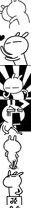

RedSpite
带表情包的富文本输入框手写插件
说到文本输入，我们常用的有 textarea 还有input[type="text"]，这两位能完成基本的文本输入。 可是当我们希望评论区域趣味一点，追求更高一点的时候捏，这两位就都得靠边站了，为啥？ 因为都不支持图片输入啊~ 如果往里面插入图片，他两是没有反应的。
当然，稍微了解的都知道div的 contenteditable = true，即是可以让div变身成可输入文本框的神奇属性。 而且！！最重要的是可以插入图片啦！咋们终于能在评论区域来一次表情包大战了~
先来个预览：
这不就是我们要的吗？ 赶紧撸起袖子，大干一场。
Html:
这就已经完成一大半啦！哈哈 就是这么简单
接下来就是表情包的事了，表情包原理其实很简单。
1. 首先是要准备一个所有表情截图spirits,尽量做成一个竖着的排版，这样截取表情方便一些。如下

2. 每一个截图区域取固定大小，背景图就是这块spirits,通过调节background-position，对应每个不同的表情。
Html:
| ... |
Css:
td{
width: 45px;
height: 35px;
padding: 0 5px;
cursor: pointer;
background: url(bjq-ct.png) no-repeat scroll left top;
}
td:nth-child(1){
background-position: left 0;
}
td:nth-child(2){
background-position: left -35px;
}
...
当表情包多了的时候就用js控制背景位置~~
3. 最后一步，我们事先将表情包的图片对应 spirts上的截图顺序编号。 当点击截图td时，获取该截图的 index() 也就是这个截图我们给他的序号，然后向div里append 对应序号的表情图片，大功告成。
当然 原理很简单，但是真正写的时候遇到的麻烦事还是挺多的，慢慢练手吧~
2016.09.22
© RedSpite | 蜀ICP备16004270号